15. Urban Model (CLMU)¶
At the global scale, and at the coarse spatial resolution of current climate models, urbanization has negligible impact on climate. However, the urban parameterization (CLMU; Oleson et al. 2008b,c) allows simulation of the urban environment within a climate model, and particularly the temperature where people live. As such, the urban model allows scientific study of how climate change affects the urban heat island and possible urban planning and design strategies to mitigate warming (e.g., white roofs).
The urban model that was released as a component of CLM4.0 is separately described in the urban technical note (Oleson et al. 2010b). Here, we provide a brief overview of the urban model released as a component of CLM4.5. The main changes in the urban model from CLM4.0 to CLM4.5 are 1) an expansion of the single urban landunit to up to three landunits per grid cell stratified by urban density types, 2) the number of urban layers for roofs and walls is no longer constrained to be equal to the number of ground layers, 3) space heating and air conditioning wasteheat factors are now set to zero by default so that the user can customize these factors for their own application, 4) the elevation threshold used to eliminate urban areas in the surface dataset creation routines has been changed from 2200 meters to 2600 meters, 5) hydrologic and thermal calculations for the pervious road now follows CLM4.5 parameterizations.
Urban areas in CLM are represented by up to three urban landunits per
gridcell according to density class. The urban landunit is based on the
“urban canyon” concept of Oke (1987) in which the canyon geometry is
described by building height ( ) and street width (
) and street width ( )
(Figure 12.1). The canyon system consists of roofs, walls, and canyon
floor. Walls are further divided into shaded and sunlit components. The
canyon floor is divided into pervious (e.g., to represent residential
lawns, parks) and impervious (e.g., to represent roads, parking lots,
sidewalks) fractions. Vegetation is not explicitly modeled for the
pervious fraction; instead evaporation is parameterized by a simplified
bulk scheme.
)
(Figure 12.1). The canyon system consists of roofs, walls, and canyon
floor. Walls are further divided into shaded and sunlit components. The
canyon floor is divided into pervious (e.g., to represent residential
lawns, parks) and impervious (e.g., to represent roads, parking lots,
sidewalks) fractions. Vegetation is not explicitly modeled for the
pervious fraction; instead evaporation is parameterized by a simplified
bulk scheme.
Each of the five urban surfaces is treated as a column within the
landunit (Figure 12.1). Radiation parameterizations account for trapping
of solar and longwave radiation inside the canyon. Momentum fluxes are
determined for the urban landunit using a roughness length and
displacement height appropriate for the urban canyon and stability
formulations from CLM. A one-dimensional heat conduction equation is
solved numerically for a multiple-layer (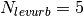) column
to determine conduction fluxes into and out of canyon surfaces. The
interior boundary conditions for roofs and walls are determined by an
interior building temperature ( ) held between prescribed
maximum and minimum temperatures
(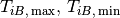 ), thus explicitly
resolving space heating and air conditioning fluxes. Anthropogenic
sources of waste heat ( ) from air conditioning
and space heating can be optionally incorporated as modifications to the
canyon energy budget. Turbulent [sensible heat (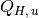 ) and
latent heat (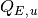 )] and storage (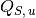 )
heat fluxes and surface (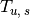 ) and internal
(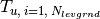 ) temperatures are determined for
each urban surface  . Hydrology on the roof and canyon floor is
simulated and walls are hydrologically inactive. A snowpack can form on
the active surfaces. A certain amount of liquid water is allowed to pond
on these surfaces which supports evaporation. Water in excess of the
maximum ponding depth runs off
(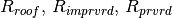 ).
. Hydrology on the roof and canyon floor is
simulated and walls are hydrologically inactive. A snowpack can form on
the active surfaces. A certain amount of liquid water is allowed to pond
on these surfaces which supports evaporation. Water in excess of the
maximum ponding depth runs off
(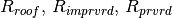 ).
The heat and moisture fluxes from each surface interact with each other
through a bulk air mass that represents air in the urban canopy layer
for which specific humidity ( ) and temperature
( ) are prognosed (Figure 12.2). The air temperature can
be compared with that from surrounding vegetated/soil (rural) surfaces
in the model to ascertain heat island characteristics. As with other
landunits, the CLMU is forced either with output from a host atmospheric
model (e.g., the Community Atmosphere Model (stocktickerCAM)) or
observed forcing (e.g., reanalysis or field observations). The urban
model produces sensible, latent heat, and momentum fluxes, emitted
longwave, and reflected solar radiation, which are area-averaged with
fluxes from non-urban “landunits” (e.g., vegetation, lakes) to supply
grid cell averaged fluxes to the atmospheric model.
) are prognosed (Figure 12.2). The air temperature can
be compared with that from surrounding vegetated/soil (rural) surfaces
in the model to ascertain heat island characteristics. As with other
landunits, the CLMU is forced either with output from a host atmospheric
model (e.g., the Community Atmosphere Model (stocktickerCAM)) or
observed forcing (e.g., reanalysis or field observations). The urban
model produces sensible, latent heat, and momentum fluxes, emitted
longwave, and reflected solar radiation, which are area-averaged with
fluxes from non-urban “landunits” (e.g., vegetation, lakes) to supply
grid cell averaged fluxes to the atmospheric model.
Present day global urban extent and urban properties were developed by Jackson et al. (2010). Urban extent, defined for four classes [tall building district (TBD), and high, medium, and low density (HD, MD, LD)], was derived from LandScan 2004, a population density dataset derived from census data, nighttime lights satellite observations, road proximity, and slope (Dobson et al. 2000). The urban extent data for TBD, HD, and MD classes are aggregated from the original 1 km resolution to both a 0.05o by 0.05o global grid for high-resolution studies or a 0.5o by 0.5o grid. For the current implementation, the LD class is not used because it is highly rural and better modeled as a vegetated/soil surface. Although the TBD, HD, and MD classes are represented as individual urban landunits, urban model history output is currently a weighted average of the output for individual classes.
For each of 33 distinct regions across the globe, thermal (e.g., heat capacity and thermal conductivity), radiative (e.g., albedo and emissivity) and morphological (e.g., height to width ratio, roof fraction, average building height, and pervious fraction of the canyon floor) properties are provided for each of the density classes. Building interior minimum and maximum temperatures are prescribed based on climate and socioeconomic considerations. The surface dataset creation routines (see CLM4.5 User’s Guide) aggregate the data to the desired resolution.
Figure 12.1. Schematic representation of the urban land unit.
See the text for description of notation. Incident, reflected, and net solar and longwave radiation are calculated for each individual surface but are not shown for clarity.

Figure 12.2. Schematic of urban and atmospheric model coupling.
The urban model is forced by the atmospheric model wind
( ), temperature (
), temperature ( ), specific
humidity (
), specific
humidity ( ), precipitation (
), precipitation ( ), solar
(
), solar
( ) and longwave
(
) and longwave
( ) radiation at reference height
) radiation at reference height
 (section 2.2.1). Fluxes from the urban landunit to the
atmosphere are turbulent sensible () and latent heat
(
(section 2.2.1). Fluxes from the urban landunit to the
atmosphere are turbulent sensible () and latent heat
( ), momentum (
), momentum ( ), albedo
), albedo
(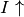 ), emitted longwave (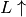 ), and
absorbed shortwave ( ) radiation. Air temperature
) radiation. Air temperature
( ), specific humidity ( ), and wind speed
( ) within the urban canopy layer are diagnosed by the
urban model. is the average building height.